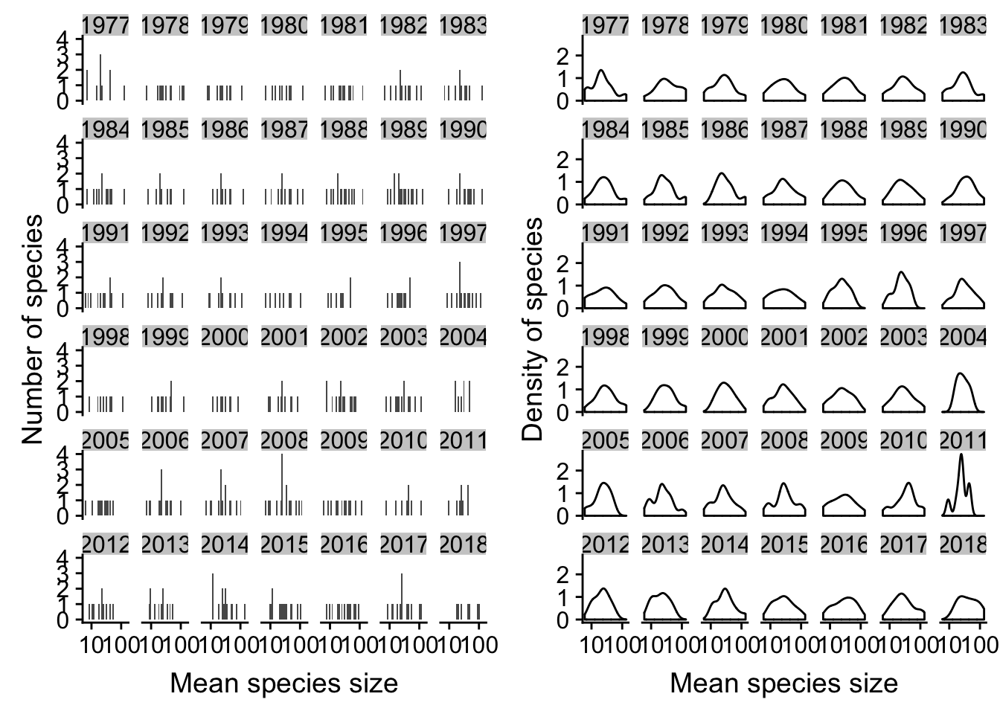

Last updated: 2018-12-07
workflowr checks: (Click a bullet for more information) ✔ R Markdown file: up-to-date
Great! Since the R Markdown file has been committed to the Git repository, you know the exact version of the code that produced these results.
✔ Environment: empty
Great job! The global environment was empty. Objects defined in the global environment can affect the analysis in your R Markdown file in unknown ways. For reproduciblity it’s best to always run the code in an empty environment.
✔ Seed:
set.seed(20181206)
The command set.seed(20181206) was run prior to running the code in the R Markdown file. Setting a seed ensures that any results that rely on randomness, e.g. subsampling or permutations, are reproducible.
✔ Session information: recorded
Great job! Recording the operating system, R version, and package versions is critical for reproducibility.
✔ Repository version: b7ea1be
wflow_publish or wflow_git_commit). workflowr only checks the R Markdown file, but you know if there are other scripts or data files that it depends on. Below is the status of the Git repository when the results were generated:
Ignored files:
Ignored: .Rhistory
Ignored: .Rproj.user/
Ignored: docs/figure/
Untracked files:
Untracked: data/occurrences.csv
| File | Version | Author | Date | Message |
|---|---|---|---|---|
| Rmd | b7ea1be | Kristina Riemer | 2018-12-07 | Add initial size distribution plot |
This generates the initial plot of body size distributions across time at Portal.
First read in necessary libraries.
library(dplyr)Warning: package 'dplyr' was built under R version 3.4.2
Attaching package: 'dplyr'The following objects are masked from 'package:stats':
filter, lagThe following objects are masked from 'package:base':
intersect, setdiff, setequal, unionlibrary(ggplot2)Warning: package 'ggplot2' was built under R version 3.4.4library(cowplot)Warning: package 'cowplot' was built under R version 3.4.2
Attaching package: 'cowplot'The following object is masked from 'package:ggplot2':
ggsaveThen read in the body size data that has already been cleaned and subsets to only Portal data.
occurrences_path = "data/occurrences.csv"
occurrences = read.csv(occurrences_path)
occurrences = filter(occurrences, site == "portal")This is the function to create the plot.
plot_size_distributions = function(site_data){
size_hist = ggplot(site_data, aes(x = mass_mean)) +
geom_histogram() +
scale_x_log10() +
labs(x = "Mean species size", y = "Number of species") +
facet_wrap(~yr)
size_density = ggplot(site_data, aes(x = mass_mean)) +
geom_density() +
scale_x_log10() +
labs(x = "Mean species size", y = "Density of species") +
facet_wrap(~yr)
size_both = plot_grid(size_hist, size_density)
return(size_both)
}This creates the plot.
plot_size_distributions(occurrences)`stat_bin()` using `bins = 30`. Pick better value with `binwidth`.
sessionInfo()R version 3.4.1 (2017-06-30)
Platform: x86_64-apple-darwin15.6.0 (64-bit)
Running under: OS X El Capitan 10.11.6
Matrix products: default
BLAS: /Library/Frameworks/R.framework/Versions/3.4/Resources/lib/libRblas.0.dylib
LAPACK: /Library/Frameworks/R.framework/Versions/3.4/Resources/lib/libRlapack.dylib
locale:
[1] en_US.UTF-8/en_US.UTF-8/en_US.UTF-8/C/en_US.UTF-8/en_US.UTF-8
attached base packages:
[1] stats graphics grDevices utils datasets methods base
other attached packages:
[1] bindrcpp_0.2 cowplot_0.9.1 ggplot2_3.0.0 dplyr_0.7.4
loaded via a namespace (and not attached):
[1] Rcpp_0.12.19 knitr_1.20 bindr_0.1
[4] whisker_0.3-2 magrittr_1.5 workflowr_1.1.1
[7] munsell_0.4.3 colorspace_1.3-2 R6_2.2.2
[10] rlang_0.2.0 plyr_1.8.4 stringr_1.3.0
[13] tools_3.4.1 grid_3.4.1 gtable_0.2.0
[16] R.oo_1.21.0 withr_2.1.2 git2r_0.19.0
[19] htmltools_0.3.6 lazyeval_0.2.1 yaml_2.2.0
[22] rprojroot_1.2 digest_0.6.15 assertthat_0.2.0
[25] tibble_1.4.2 R.utils_2.6.0 glue_1.2.0
[28] evaluate_0.10.1 rmarkdown_1.8 labeling_0.3
[31] stringi_1.1.7 pillar_1.2.1 compiler_3.4.1
[34] scales_0.5.0 backports_1.1.1 R.methodsS3_1.7.1
[37] pkgconfig_2.0.1 This reproducible R Markdown analysis was created with workflowr 1.1.1